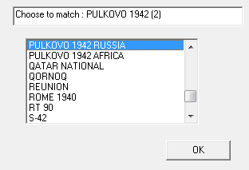

Андрей Коперский — фотографии походов
Фотографии походов, приглашаю в поход
Page Tools
Подготовка карты в MAPC2MAPC
Удобная программа для привязки и фрагментирования растровых карт
Настоятельно рекомендую ознакомиться с программой MAPC2MAPC. Она еще только начала развиваться, но уже привлекла внимание набором полезных функций. Нас интересует возможность переводить угловые координаты из национальных систем в WGS-84, что позволяет автоматически перепревязывать генштабовские карты к мировой координатной системе. Также полезна способность программы склеивать листы карты из разных файлов.
Но по истине замечательное свойство программы — возможность интерактивно выбирать фрагменты карты для загрузки в навигатор. Зачем загружать весь лист, если нас интересует, скажем, местность вокруг озера? Исключив ненужные фрагменты, можно поберечь ресурсы навигатора.
Давайте посмотрим, как выполняются эти операции. Но сначала убедитесь, что у вас установлен архиватор 7z, поскольку он используется для создания архива kmz.
-
Запустите программу и выберите пункт меню Edit > Preferences. Отображается диалог параметров.

-
Отметьте флажок Advanced Garmin Tile Control и нажмите OK.
Это включит возможность интерактивно указывать фрагменты карты для загрузки в навигатор.
-
Выберите пункт меню Edit > Locate 7-Zip program и укажите местоположение архиватора 7z.exe.
-
Выберите пункт меню File > Open Calibration.
Откроется диалог выбора карты, а точнее файла привязки с расширением map.
 Луше
предварительно скопировать карту и файл привязки в отдельный каталог,
чтобы исходные файлы не были изменены. В процессе работы программа
создает вспомогательные файлы. Вряд ли вы хотите, чтобы эти временные файлы
замусоривали основной каталог с картами.
Луше
предварительно скопировать карту и файл привязки в отдельный каталог,
чтобы исходные файлы не были изменены. В процессе работы программа
создает вспомогательные файлы. Вряд ли вы хотите, чтобы эти временные файлы
замусоривали основной каталог с картами. -
Перейдите в каталог, где расположены карты и файлы привязки и откройте нужный map-файл.
Отобразится диалог выбора датума карты.

-
Выберите в списке значение “PULKOVO 1942 RUSSIA” и нажмите OK.
Программа скорректирует координаты привязки, чтобы они соответствовали системе WGS-84. Сделанный выбор программа запомнит и в следующий раз будет автоматически выбирать этот же датум.
Чтобы программа забыла
о датуме, выберите пункт меню Edit > Remove Datum Match.
При следующем открывании карты программа снова попросит выбрать
датум. -
Выберите пункт меню File > Write Garmin Custom Map.
Отобразится диалог выбора фрагментов карты.

-
Изменяйте значения в полях Tile horizontal и Tile vertical, чтобы установить оптимальное количество и размер фрагментов.

Щелкайте мышью по фрагментам, чтобы переключать их состояние. Красный крестик означает, что фрагмент не будет выводиться в файл kmz и не попадет в навигатор.
-
Нажмите OK.
Карта будет разделена на фрагменты, каждый из которых будет записан в отдельный файл jpeg. Также будет создан файл привязки doc.kml. Эти файлы будут помещены в архив с таким же именем, как у открытого map-файла и с расширением kmz.
Полученный файл kmz нужно записать на съемную карту памяти навигатора в каталог Garmin\CustomMaps. После включения Dakota растровая карта будет отображаться под векторной.